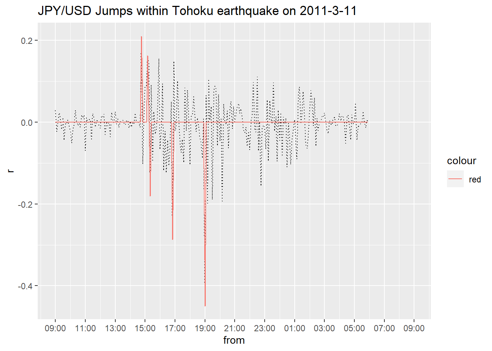

Rcppでデータハンドリングを高速に行う(Tickデータの処理を事例に)

0. やりたいこと
今回お見せするのは前述の通り、為替のTickデータを使った前処理(と解析)になります。主眼をRcppを用いた効率化に置いていますので詳しくは踏み入りませんが、やりたいことをざっくりと先に示しておきます。
やりたいのは、JPY/USDレートの5分刻みリターンからJumpを検知することです。ここでのJumpとはそれまでと比べて為替レートがガクッと上昇(下落)した点です。日中為替レートは小刻みに動きますが、なにかイベントがあると大きく上昇(下落)します。どんなイベントがJumpを引き起こすのかは非常に興味深い点です。これを検証するにはまずJumpを検知する必要があるのです。 参考とするのは以下の論文です。
Citationが204もある非常に評価されている論文です。推定方法を掻い摘んで説明します。まず、連続複利リターンを\(d\log S(t)\) for \(t>0\)とします。ここで、\(S(t)\)は\(t\)時点での資産価格です。市場にJumpがない場合、\(S(t)\)は以下の確率過程に従うと仮定します。 \[ d\log S(t) = \mu(t)dt + \sigma(t)dW(t) \tag{1} \] ここで、\(W(t)\)は標準ブラウン運動、\(\mu(t)\)はドリフト項、\(\sigma(t)\)はスポットボラティリティです。また、Jumpがあるとき、\(S(t)\)は \[ d\log S(t) = \mu(t)dt + \sigma(t)dW(t) + Y(t)dJ(t) \tag{2} \] に従うと仮定します。ここで、\(J(t)\)は\(W(t)\)とは独立したカウント過程です。1\(Y(t)\)はジャンプのサイズを表現しており、予測可能な過程であるとします。
次に、\(S(t)\)の対数リターンを考えます。それはつまり\(\log S(t_i)/S(t_{i-1})\)ですが、これは正規分布\(N(0,\sigma(t_i))\)に従います。2ここで、\(t_{i-1}\)から\(t_{i}\)にJumpがあった際の\(t_i\)時点の統計量\(\mathcal{L(i)}\)を以下で定義します。
こうして計算されたJump統計量\(\mathcal{L(i)}\)をどのように統計的検定に用いてJumpを検出するかに話を移しましょう。これは確率変数である\(\mathcal{L(i)}\)の最大値(こちらも確率変数)を考え、その分布から大きく逸脱した値を取った場合(95%点とか)、そのリターンをJumpとします。
期間\([t_{i-1},t_{i}]\)にJumpがないとした場合、この期間の長さ\(\Delta=t_{i}-t_{i-1}\)を\(0\)に近づけると、つまり\(\Delta\rightarrow0\)とすると、標準正規変数の絶対値の標本最大値は、ガンベル分布に収束します。皆さん大好き極値統計ですね。よって、Jumpは以下の条件が満たされた際に帰無仮説が棄却され、検出することができます。 \[
\mathcal{L(i)} > G^{-1}(1-\alpha)S_{n} + C_{n} \tag{5}
\] ここで、\(G^{-1}(1-\alpha)\)は標準ガンベル分布の\((1-\alpha)\)分位関数です。\(\alpha=10%\)だと2.25になります。また、 \[
S_{n} = \frac{1}{c(2\log n)^{0.5}} \\
C_{n} = \frac{(2\log n)^{0.5}}{c}-\frac{\log \pi+\log(\log n)}{2c(2\log n)^{0.5}}
\] です(導出はしませんが、1式と2式を使って証明できます)。ここで、\(c=(2/\pi)^{0.5}\)で、\(n\)は推定に使用する総サンプルサイズです。 最終的に、\(Jump_{t_i}\)は \[
Jump_{t_i} = \log\frac{S(t_i)}{S(t_{i-1})}×I(\mathcal{L(i)} - G^{-1}(1-\alpha)S_{n} + C_{n})\tag{6}
\] で求められることになります。ここで、\(I(・)\)は中身が0より大きいと1、それ以外は0を返すIndicator関数です。
1. データの読み込み
では、推定方法がわかったのでまずTickデータの読み込みをしましょう。データはQuantDataManagerからcsvを取得し、それを作業ディレクトリに保存しています。
library(magrittr)
# Tick dataの読み込み
strPath <- r"(C:\Users\hogehoge\JPYUSD_Tick_2011.csv)"
JPYUSD <- readr::read_csv(strPath)関係ないんですが、最近Rを4.0.2へ上げました。4.0以上ではPythonでできた文字列のEscapeができるとうことで今までのストレスが解消されてかなりうれしいです。
データは以下のような感じで、日付の他にBid値、Ask値と取引量が格納されています。なお、ここでは2011年のTickを使用しています。東日本大震災の時のドル円を対象とするためです。
summary(JPYUSD)## DateTime Bid Ask Volume
## Min. :2011-01-03 07:00:00 Min. :75.57 Min. :75.58 Min. : 1.00
## 1st Qu.:2011-03-30 15:09:23 1st Qu.:77.43 1st Qu.:77.44 1st Qu.: 2.00
## Median :2011-06-15 14:00:09 Median :80.40 Median :80.42 Median : 2.00
## Mean :2011-06-22 05:43:11 Mean :79.91 Mean :79.92 Mean : 2.55
## 3rd Qu.:2011-09-09 13:54:51 3rd Qu.:81.93 3rd Qu.:81.94 3rd Qu.: 3.00
## Max. :2011-12-30 06:59:59 Max. :85.52 Max. :85.54 Max. :90.00ちなみに、DateTimeはUTC基準で日本時間だと2011/1/3 07:00:00から2011-12-30 06:59::59(米国時間2011-12-30 16:59:59)までを含んでいます。サンプルサイズは約1200万件です。
NROW(JPYUSD)## [1] 119466212. 前処理
では次にBidとAskから仲値を計算し、後でリターンを算出するために対数を取っておきます。
# AskとBidの仲値を計算し、対数化(対数リターン算出用)
JPYUSD <- JPYUSD %>% dplyr::mutate(Mid = (Ask+Bid)/2) %>%
dplyr::mutate(logMid = log(Mid))現状不規則に並んでいる取引データを5min刻みのリターンに整形します。やり方は、
1. 1年間を5min毎に刻んだPOSIXctベクトルを作る。
2. 1.を引数として渡すと、その5minのWindowのうち、最初と最後のサンプルから対数リターンを順々に計算する関数を作成する。
3. 実行。
という計画です。まず、1.のベクトルを作成します。
# 5min刻みでのリターンを算出するためのPOSIXベクトルを作成(288×日数)
start <- as.POSIXct("2011-01-02 22:00:00",tz="UTC")
end <- as.POSIXct("2011-12-31 21:55:00",tz="UTC")
from <- seq(from=start,to=end,by=5*60)では、2.に移ろうということなんですが、データが1200万件もあるとRでpurrr::mapとかapply属を使用したとしても、関数呼び出しに時間がかかって結構非効率だったりします。。。sapplyでやってみましたがなかなか処理が完了せず、強制終了しました。こういうときには、Rccpが便利です。Rはグラフや統計処理のための非常に便利な関数が多数ありますが、ユーザーで定義した関数の呼び出しを含む、大量の繰り返し処理を苦手とします(スクリプト言語なのでコンパイル言語よりはという意味です)。なので、繰り返し処理の部分だけ、C++で書いてしまって、それをRcppをつかってRの関数としてコンパイルし、実行。結果の集計や可視化、執筆はRで行うというフローが非常に効率的です。
また、RccpはRに似た違和感の少ない記述方法でC++を記述するのを助けてくれます。詳しいことは以下を見れば問題ないと思います。かなりまとまっていて控えめに言って神です。
では、2.にあたるコードを書いていきます。コーディングに当たってはネット上の記事を参考にしました。C++はRよりも歴史があるし、使用者も多いので知りたい情報はすぐ見つけられます。
#include <Rcpp.h>
#include <algorithm>
using namespace Rcpp;
//[[Rcpp::plugins(cpp11)]]
// [[Rcpp::export]]
DataFrame Rolling_r_cpp(
DataFrame input, //（計測時刻time, 計測値data）のデータフレーム
newDatetimeVector from, //計算するタイミングの始点ベクトル
double time_window = 5*60) //計算するwindow幅（秒）
{
// 計測時刻と計測値をベクトルとして取り出す
newDatetimeVector time = input["DateTime"]; // 今回は time は昇順にソートされているのが前提です。
NumericVector data = input["logMid"];
// 計算するタイミングの終点ベクトル
newDatetimeVector to = from + time_window;
// 計算する数
R_xlen_t N = from.length();
// 格納するベクトル
NumericVector value(N);
// ベクトル要素の位置をあらわすオブジェクト
newDatetimeVector::iterator begin = time.begin();
newDatetimeVector::iterator end = time.end();
newDatetimeVector::iterator p1 = begin;
newDatetimeVector::iterator p2 = begin;
// window i についてループ
for(R_xlen_t i = 0; i < N; ++i){
// Rcout << "i=" << i << "\n";
double f = from[i]; //windowの始点の時刻
double t = f + time_window; //windowの終点の時刻
// windowの終点が最初の計測時刻以前の時はNA、または
// windowの始点が最後の計測時刻のより後の時はNA
if(t <= *begin || f > *(end-1)){
value[i] = NA_REAL;
continue;//次のループへ
}
// ベクトル time の位置 p1 以降の要素xから
// 時刻がwindowの始点f「以降」である「最初の要素」の位置を p1 とする
p1 = std::find_if(p1, end, [&f](double x){return f<=x;});
// p1 = std::lower_bound(p1, end, f); //上と同義
// ベクトル time の位置 p1 以降の要素xから
// 時刻がwindowの終点t「より前」である「最後の要素」の位置を p2 とする
// （下では、時刻がwindowの終点t「以降」である「最初の要素」の１つ前の位置、にすることで実現している’）
p2 = std::find_if(p1, end, [&t](double x){return t<=x;}) - 1 ;
// p2 = std::lower_bound(p1, end, t) - 1 ;//上と同義
// 要素の位置p1,p2を、要素番号i1, i2に変換する
R_xlen_t i1 = p1 - begin;
R_xlen_t i2 = p2 - begin;
// 要素番号の確認
// C++は要素番号が0から始まるのでRに合わせるために1を足している
// Rcout << "i1 = " << i1+1 << " i2 = " << i2+1 << "\n";
// 該当する範囲のデータについて計算する
if(i1>i2) {
value[i] = NA_REAL; // window内にデータがない場合
} else {
value[i] = data[i2] - data[i1];
}
// ↑を変更することで様々なwindow関数を作成できる
}
// 計算した時間と、値をデータフレームとして出力する
DataFrame out =
DataFrame::create(
Named("from", from),
Named("r", value*100));
return out;
}Rcpp::sourceCppでコンパイルしたら、以下のようにRの関数として実行します。
system.time(results <- Rolling_r_cpp(JPYUSD,from))## ユーザ システム 経過
## 0.01 0.00 0.01はい。1200万件のデータの処理に1秒かかりません。便利ー。
summary(results)## from r
## Min. :2011-01-02 22:00:00 Min. :-1.823
## 1st Qu.:2011-04-03 15:58:45 1st Qu.:-0.014
## Median :2011-07-03 09:57:30 Median : 0.000
## Mean :2011-07-03 09:57:30 Mean : 0.000
## 3rd Qu.:2011-10-02 03:56:15 3rd Qu.: 0.015
## Max. :2011-12-31 21:55:00 Max. : 2.880
## NA's :29977問題なく、リターンが計算されています。では、Realized Bipower Variationの計算に移りましょう。5min刻みの場合はWindowの長さは270が推奨でしたが、そこも引数として柔軟を持たせた作りにします。また、NAの処理についても丁寧に行います。
#include <Rcpp.h>
#include <cmath>
using namespace Rcpp;
//[[Rcpp::plugins(cpp11)]]
// [[Rcpp::export]]
float rbv_cpp(
NumericVector x, // rbvを計算するリターンベクトル
bool na_rm = true) // xにNAが含まれている場合、取り除いて計算するか
{
// 計算回数を取得
R_xlen_t N = x.length();
// 計算結果を入れる変数を定義
float out = 0;
// xの欠損有無を確認
LogicalVector lg_NA = is_na(x);
// xにNAが存在した場合、そのNAを除いて計算するかどうか
if(any(lg_NA).is_true() and na_rm==FALSE){
out = NA_REAL; // NAを計算結果として出力
} else {
// NAを除く場合
if (any(lg_NA).is_true() and na_rm==TRUE){
x[is_na(x)==TRUE] = 0.00; // NAに0を埋め、実質的に計算から除外する
}
// rbvの分子(総和)を計算
for(R_xlen_t i = 1; i < N; ++i){
out = out + std::abs(x[i])*std::abs(x[i-1]);
}
// 平均値を計算し、ルートをとる
long denomi; //分母
if(N-sum(lg_NA)-2>0){
denomi = N-sum(lg_NA)-2;
} else {
denomi = 1;
}
out = out/denomi;
out = std::sqrt(out);
}
return out;
}
// [[Rcpp::export]]
DataFrame Rolling_rbv_cpp(
DataFrame input, //（計測時刻time, 計測値data）のデータフレーム
int K = 270, // 計算するRolling Window幅
bool na_pad = false, // Window幅が足りないときにNAを返すか
bool na_remove = false // Window幅の中にNAが存在した場合、除いて計算を行うか
){
// リターンベクトルとサンプル数を取り出す
NumericVector data = input["r"];
R_xlen_t T = data.length();
// 計算結果を格納するベクトルを準備
NumericVector value(T);
// Windows幅毎にRBVを計算し、格納する
if(na_pad==TRUE){
value[0] = NA_REAL; // NAを返す
value[1] = NA_REAL; // NAを返す
value[2] = NA_REAL; // NAを返す
} else {
value[0] = 0; // 0を返す
value[1] = 0; // 0を返す
value[2] = 0; // NAを返す
}
for(R_xlen_t t = 3; t < T; ++t){
// Windows幅が足りるかどうかで処理を分岐
if (t-K>=0){
value[t] = rbv_cpp(data[seq(t-K,t-1)],na_remove); // 通常計算を実行
} else if(na_pad==FALSE) {
value[t] = rbv_cpp(data[seq(0,t-1)],na_remove); // Kに満たない不完全なWidnows幅で計算を実行
} else {
value[t] = NA_REAL; // NAを返す
}
}
// 計算した時間と値をデータフレームとして出力する
DataFrame out =
DataFrame::create(
Named("from", input["from"]),
Named("r", data),
Named("rbv",value));
return out;
}では、これもコンパイルし、Rで実行します。
system.time(results <- results %>% Rolling_rbv_cpp(na_remove = FALSE))## ユーザ システム 経過
## 0.22 0.10 0.33こちらも一瞬ですね。
3. Jump統計量の計算
では、次に今計算したリターンと標準偏差から統計量\(\mathcal{L}_{t_i}\)を計算しましょう。
# 対数リターンの絶対値を標準化=Jump統計量
results <- results %>% dplyr::mutate(J=ifelse(rbv>0,abs(r)/rbv,NA))今こんな感じです。
summary(results)## from r rbv J
## Min. :2011-01-02 22:00:00 Min. :-1.823 Min. :0.00 Min. : 0.00
## 1st Qu.:2011-04-03 15:58:45 1st Qu.:-0.014 1st Qu.:0.02 1st Qu.: 0.28
## Median :2011-07-03 09:57:30 Median : 0.000 Median :0.02 Median : 0.64
## Mean :2011-07-03 09:57:30 Mean : 0.000 Mean :0.03 Mean : 0.93
## 3rd Qu.:2011-10-02 03:56:15 3rd Qu.: 0.015 3rd Qu.:0.03 3rd Qu.: 1.23
## Max. :2011-12-31 21:55:00 Max. : 2.880 Max. :0.16 Max. :58.60
## NA's :29977 NA's :44367 NA's :44423では、Jump検定に移りましょう。まず、必要な関数を定義しておきます。
# Jump検定を計算するための定数&関数を準備
c <- (2/pi)^0.5
Cn <- function(n){
return((2*log(n))^0.5/c - (log(pi)+log(log(n)))/(2*c*(2*log(n))^0.5))
}
Sn <- function(n){
1/(c*(2*log(n))^0.5)
}では検定を行います。棄却されたサンプルは1、それ以外は0を返します。
# Jump検定(10%)を実行(返り値はlogical)
N <- NROW(results$J)
results <- results %>% dplyr::mutate(Jump = J > 2.25*Sn(N) + Cn(N))
summary(results)## from r rbv J
## Min. :2011-01-02 22:00:00 Min. :-1.823 Min. :0.00 Min. : 0.00
## 1st Qu.:2011-04-03 15:58:45 1st Qu.:-0.014 1st Qu.:0.02 1st Qu.: 0.28
## Median :2011-07-03 09:57:30 Median : 0.000 Median :0.02 Median : 0.64
## Mean :2011-07-03 09:57:30 Mean : 0.000 Mean :0.03 Mean : 0.93
## 3rd Qu.:2011-10-02 03:56:15 3rd Qu.: 0.015 3rd Qu.:0.03 3rd Qu.: 1.23
## Max. :2011-12-31 21:55:00 Max. : 2.880 Max. :0.16 Max. :58.60
## NA's :29977 NA's :44367 NA's :44423
## Jump
## Mode :logical
## FALSE:59864
## TRUE :257
## NA's :44423
##
##
## 4. ggplot2を用いた可視化
数値が計算できましたので可視化しましょう。2011/03/11の日中のJPY/USDの5min刻み対数リターンの推移とJumpを重ねてPlotします。ちなみに横軸は日本時間に修正しています。
# 2011/03/11の東日本大震災発生時のJumpについてPlot
results %>%
dplyr::filter(from >= as.POSIXct("2011-03-11 00:00:00",tz="UTC"),from < as.POSIXct("2011-03-12 00:00:00",tz="UTC")) %>%
ggplot2::ggplot(ggplot2::aes(x=from,y=r)) +
ggplot2::geom_path(linetype=3) +
ggplot2::geom_path(ggplot2::aes(x=from,y=r*Jump,colour="red")) +
ggplot2::scale_x_datetime(date_breaks = "2 hours", labels = scales::date_format(format="%H:%M",tz="Asia/Tokyo")) +
ggplot2::ggtitle("JPY/USD Jumps within Tohoku earthquake on 2011-3-11")## Warning: Removed 36 row(s) containing missing values (geom_path).
## Warning: Removed 36 row(s) containing missing values (geom_path).
ここまで執筆するのに結構時間使っていて、今23:37なんで深い考察は控えますが、震災が発生したのが14:46:18ですから市場は震災直後即座に円安に反応したことが分かります。その後なぜか円高方向へ進み19:00にはピークになっています。安全資産の円とか言われますが、この時ばかりは不確実性の高まりからして安全じゃないだろと思いますが。。。
5. まとめ
Rcppを使ったR分析の効率化について紹介しました。C++は愚直にコードを書いてもRより格段に処理が早いのでコーディングミスしにくい印象です。学術的な実装をやるときは内容が複雑になるのでこれはありがたいです。また、コンパイルエラーが起こってもRStudioを使っていればどこでコンパイルエラーが起こっているか手がかりをくれますのでその点でもストレスはないのでお勧めです。
非負、整数、非減少の値を持つ確率過程のこと。↩︎
平均はドリフト項の形状により必ずしも0にはなりませんが、今ドリフト項は十分小さい値を想定しているのでこの書き方にさせてください。論文ではより厳密に定義しています。 \[ \mathcal{L(i)} \equiv \frac{|\log S(t_i)/S(t_{i-1})|}{\hat{\sigma}_{t_i}} \tag{3} \] 対数リターンの絶対値を単純に標準化したものですが、標準偏差の推定量には以下で定義される“Realized Bipower Variation”を使用しています。 \[ \hat{\sigma}_{t_i} = \frac{1}{K-2}\sum_{j=i-K+2}^{i-2}|\log S(t_j)/\log S(t_{j-1})||\log S(t_{j-1})/\log S(t_{j-2})| \tag{4} \] \(K\)はWindowに含まれるサンプルサイズの数です。仮に5min刻みリターンを用い、2020/9/10 10:00にJumpが発生した場合、\(K=270\)としている場合は前日2020/9/9 11:30から2020/9/11 09:55までのサンプルを用いて計算することになります。やっていることは、リターンの絶対値をかけたものを足し合わせるということですが、これでJumpが生じた次の瞬間(つまり\(t_{i+1}\)とか）の推定値がJumpに影響されにくいようです。ちなみに\(K=270\)は5min刻みリターンの場合の推奨値と別の文献で紹介されています。↩︎